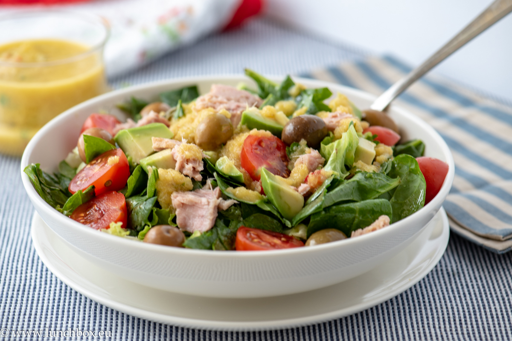

Рецепта 1:Зелена салата с риба тон
Нарежете айсберга или марулята заедно с чери домати и краставица, след това овкусете салатата с лимон,сол и зехтин. Накрая сложете една консерва риба тон и сервирайте!
Нарежете айсберга или марулята заедно с чери домати и краставица, след това овкусете салатата с лимон,сол и зехтин. Накрая сложете една консерва риба тон и сервирайте!

Нарежете един домат и едно авокадо и ги подредете в чинията, върху тях сложете шепа рукола или микс зелени салати.След това сложете буратата и песто на вкус.Овкусете със сол и малко зехтин.
Разбийте в купа 3 яйца с вилица. Изсипете в загрят тиган яйцата и с леко поклащане ги разпределете по дъното.Поръсете със сол и черен пипер на вкус. Добавете и нарязан домат на кубчета.След това прегънете омлета и оставете да се досготви. Сервирайте топъл.
Картофите се измиват добре и се нарязват по дължина, на дебели парчета. В тавата, намазана с олио се слагат картофите и се смесват с черен пипер,сол,копър и чесън на прах.Печете на предварително загрята на 200 градуса фурна за 30 минути.

Разбийте 100г. белтъци с миксер до стегнато състояние. Добавете 30г. брашно, малко бакпулвер, мляко, подсладител, ванилия и канела. Разбъркайте за няколко секунди. В тиган с малко масло изпечете малки палачинки.Намажете с плодов скир и нискокалорично сладко. Добавете плодове по избор.
Разбийте 3 яйца, заедно с 250г. захар,докато сместа побелее.След това добавете 50мл.олио и 400г.кисело мляко и отново разбъркайте.Накрая добавете 600г. брашно и 1ч.л.бакпулвер.В намаслена форма за кекс се изсипва сместа.Кексът се пече на предварително загрята до 200 градуса фурна за 45 минути.